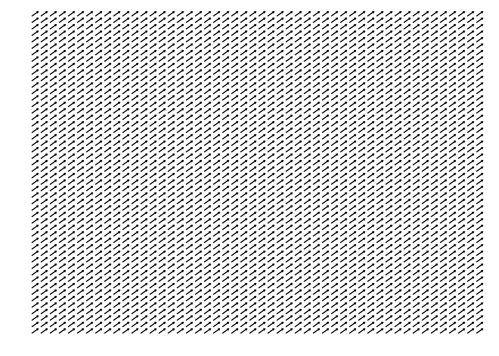
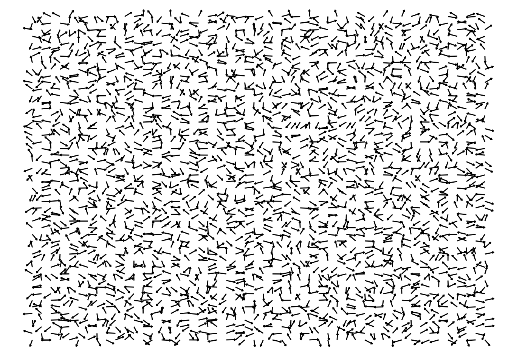
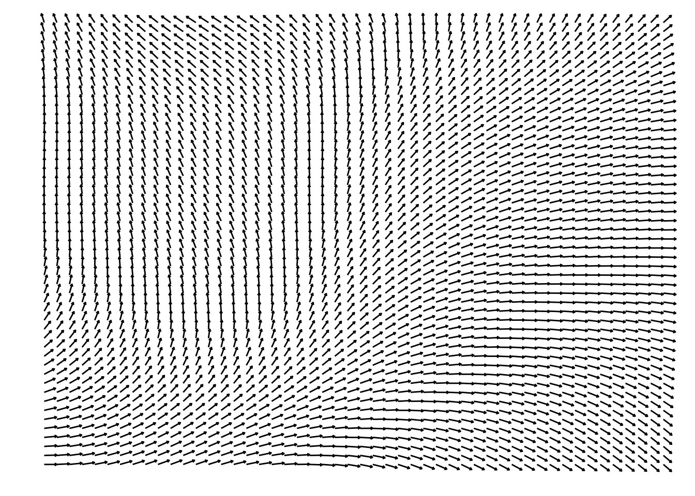
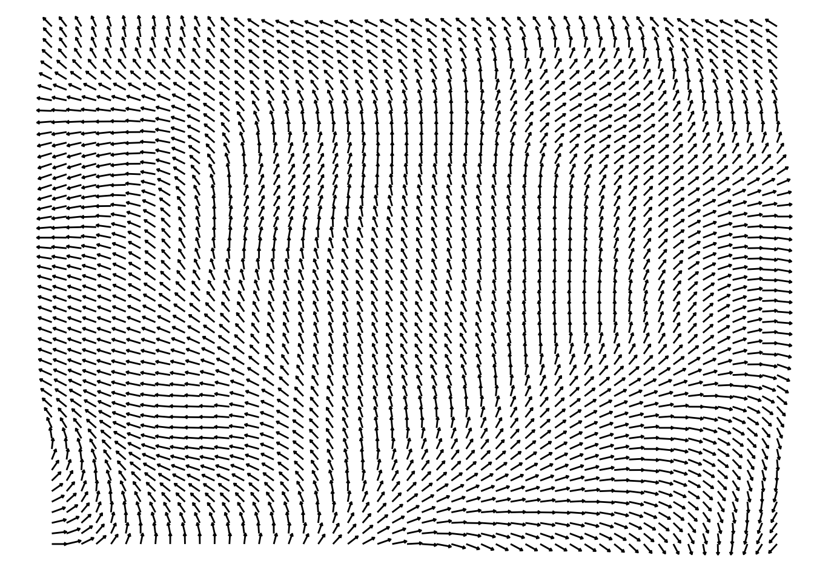
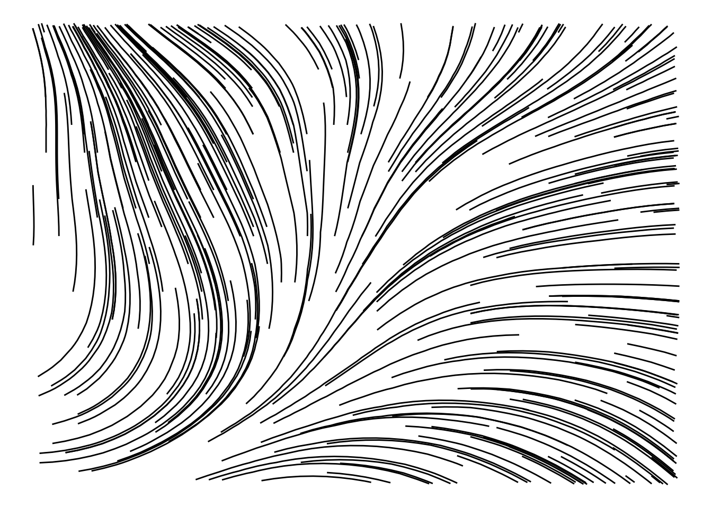

library(tibble)
build_grid_df <- function(angles, n) {
tibble(
x = rep(seq_len(n), each = n),
y = rep(seq_len(n), times = n),
value = angles |> as.vector()
)
}4 Introducing Flow Fields
Flow fields are one of the most iconic and powerful techniques used in generative art. The essential idea behind a flow field is to create a grid of angles. When a object moves through this grid, it follows the direction of the angle that is stored in the current position that this object is on the grid (Hobbs 2024).
In other words, by having a grid of angles as the basis, we basically pick a starting point somewhere in this grid, then, we start walking through this grid, by taking small steps in the direction of the angle that we are currently seeing. We walk as much as we much as we want/need to.
You could also understand flow fields as a very powerful way of creating interesting curves and paths. If your art involves these types of elements, a flow field might be the perfect technique for you.
4.1 Building a grid of angles
Let’s start with “how to create a grid of angles?”. Since we are talking about a 2D grid, with x and y coordinates, we want to store this grid either as a 2D matrix, or, as a tibble with x and y columns. To do that, you could use the exact same techniques as we used at Section 3.3, to build a 2D matrix or a tibble to store two dimensional random values.
In essence, if you prefer to build the 2D matrix, you could simply pass the vector with all the angles values in the grid to the matrix(), and specifying the number of columns and rows that you want to use.
In the other hand, if you prefer the tibble instead, we used the rep() function in conjunction with seq_len() to build the x and y coordinates columns in the tibble. The function build_grid_df() below summarizes this technique:
4.1.1 Building a fixed angle grid
Let’s start by building a grid with a fixed angle. This means that all coordinates in the grid will have the exact same angle value. So the angle is “fixed”, or “constant” across the grid.
To build such a grid, simply use a constant value across your matrix or tibble. In the example below, we are creating a 50x50 grid filled with the angle \(\pi/4\).
n <- 50
fixed_angle <- pi / 4
grid <- build_grid_df(fixed_angle, n)
grid# A tibble: 2,500 × 3
x y value
<int> <int> <dbl>
1 1 1 0.785
2 1 2 0.785
3 1 3 0.785
4 1 4 0.785
5 1 5 0.785
6 1 6 0.785
7 1 7 0.785
8 1 8 0.785
9 1 9 0.785
10 1 10 0.785
# ℹ 2,490 more rowsBut how can we can visualize this grid of angles? Well… we can draw \(50^2\) small lines with this same particular angle, and then, we spread all of these lines across the grid, using a translation operation as we presented at Section 2.1.
So, all we have to do, is to draw \(50^2\) lines that are identical (same length, same angle), and then, we apply a translation to move each individual line to a particular point in the grid. Like that:
library(tidyverse)
visualize_grid <- function(grid, n){
# Calculate the n^2 lines
grid <- grid %>%
mutate(
line_id = seq_len(nrow(grid)),
xend = cos(value),
yend = sin(value),
)
# Spread the lines across the grid
grid <- grid %>%
mutate(
xend = xend + x,
yend = yend + y
)
# Plot these lines
u <- "inches"
a <- arrow(length = unit(0.025, u))
ggplot(grid) +
geom_segment(
aes(
x = x, y = y,
xend = xend,yend = yend,
group = line_id
),
arrow = a
) +
coord_cartesian(
xlim = c(0,n), ylim = c(0,n)
) +
theme_void()
}
visualize_grid(grid, n)
You can see in the output above, that all lines are in the same angle. Because the angle value is constant across the grid. But a flow field with constant angle values is kind of useless. So let’s level up this game by introducing some randomness.
4.1.2 Building a random angle grid
Now, we can add a little bit of randomness to this field, by using random angle values. First, we generate \(50^2\) random values with runif().
However, we need to scale these random values. By default, runif() generates random values that are between 0 and 1. You can use these values as percentages (from 0% to 100%) to transport them into a different scale.
The radians scale goes from \(-2\pi\) to \(2\pi\), when both clockwise, and counter-clockwise movements are considered. But for this example, let’s consider solely counter-clockwise movements, which limits the scale to positive values (from zero to \(2\pi\)). So we can multiply the random values produced by runif() with \(2\pi\), to transport these random values into the radians scale.
After that, we spread these random angle values into a grid with the build_grid_df() function we created before:
set.seed(50)
angles <- runif(n ^ 2) * 2 * pi
grid <- build_grid_df(angles, n)Now that we have the grid of angles, all we have to do is to visualize it, with the visualize_grid() function that we created in the previous section. And yeah… this field is a mess, because we now have \(50^2\) lines that are in completely random angles:
visualize_grid(grid, n)
In other words, this field is simply too much random! We do need to use random values to create an actual flow field. But these random values need to have some minimal level of resemblance with each other. That is why, runif() is not the best tool for generating a flow field.
But despite this being a very messy field, you may find a new utility for it. Everything depends of your creativity! For example, this field as is, might be an interesting candidate to be a soft pattern in the background of your art. In other words, this flow field might not be the main character in your art, but he might be an element to support the rest of your idea.
4.2 Building an actual flow field with Perlin Noise
At Section 4.1.2, we produced a field that was just too much random. We could hardly call that a “flow field”, because there was nothing fluid about it. The lines across the grid had no connection with each other, like a machine gun that was desperately shooting to all directions at the same time.
So now, let’s produce an actual flow field. A field of angles that actually makes sense. And for that, we are going to use the Perlin Noise algorithm (that was presented at Section 3.4) in our favor.
First thing we need to do, is to generate the grid of random values. With Perlin Noise, that is extremely easy to make, because we can easily get a 2D matrix of random values with the noise_perlin() function from the ambient R package, as we described at Section 3.4.
But this time, we need, once again, to scale these random values produced by Perlin Noise, so that they represent actual angle values, using the radians scale. To that, we simply multiply these values by \(2\pi\), in the same way as we did at Section 4.1.2.
library(ambient)Warning: package 'ambient' was built under R version 4.3.2set.seed(50)
angles <- noise_perlin(c(n, n)) * 2 * pi
grid <- build_grid_df(angles, n)After that, we now have a grid of angles that represents a functional flow field. We can visualize this field in the same way as we did before:
visualize_grid(grid, n)
That looks much more natural compared to the previous grids! It also feels much more fluid. Like winds flowing and doing smooth curves around this grid.
You could also use the Simplex Noise algorithm to generate the random values, instead of the classic Perlin Noise. However, as we described at Section 3.4, the Simplex Noise algorithmn produces “stronger” results, with random values that vary more rapidly across the grid. As a result, a flow field created from Simplex Noise is less smooth compared to a flow field created from classic Perlin Noise. You can see this fact in the example below:
set.seed(50)
angles <- noise_simplex(c(n, n)) * 2 * pi
grid <- build_grid_df(angles, n)
visualize_grid(grid, n)
4.3 Drawing curves in the flow field
Now that we have a functional flow field, we want to use it to actually draw things in the screen, specially curves.
In order to do do that, we need to walk across the grid. First, we choose a point in the grid as our starting point, and then, we start to walk in the grid by following the direction of the angles we encounter in the grid. As we walk trough the grid, we record the x and y coordinates of our positions. When we finish walking, we can draw a curve by “connecting the dots”, i.e. connecting the points (x and y coordinates) that we passed through.
So, in essence, the steps for drawing a curve in a flow field are:
- Choose a starting point in the grid.
- Look at the angle that is stored in the position of the grid that you are currently in.
- Take a step in the direction of that angle.
- Recalculate your current position in the grid, and record/store this position for later use.
- Comeback to step 2.
You can see in the bullet points above that, we begin a loop at step 5. We are repeatedly taking a step in the direction of an angle, recalculating our current position in the grid, and taking another step in the direction of another angle. As long as we stay inside the boundaries of the grid, we can repeat this pattern as much as we want to.
As you walk trough the grid, the angle that you currently using might lead you to a position that is off the boundaries of the grid. In that case, you should stop walking, before you go off the grid. Because if you pass the boundaries of the grid, then, the lookup process we perform to take an angle in the grid, will fail.
4.3.1 A first example
Now, as a first example, let’s actually draw a curve into this flow field. We are going to use specifically the flow field created from the Perlin Noise algorithm, that we exposed in the previous example.
But instead of using the grid of angles as a tibble object, in this particular case, is better to represent the grid of angles as a 2D matrix. That is why in the example below, we are recreating the flow field again, but this time, we are not using the build_grid_df() function that we used before, to convert the 2D matrix into a tibble object.
n <- 50
set.seed(50)
angles <- noise_perlin(c(n, n)) * 2 * piUsing a 2D matrix instead of a tibble object, is better in this case, because we can easily get the angle value in any position in the grid, by using the R subsetting function ([). In the example below, we are looking at the angle value that is stored at position \(x = 14\) and \(y = 38\) of the grid:
angles[14, 38][1] -0.06698327First, we need to decide our starting point in the grid, and this will be the coordinate \((5, 10)\). Second, we need to decide the values for two essential variables to this process, which is the number of steps we want to take in the grid (which is essentially “how much we want to walk”), and also, the length of each step (which is “how far we want to go in each step”).
The number of steps taken affects the length of the curve that is drawn. If you take few steps, the curve will be short. But if you raise the number of steps, the curve will be longer.
In contrast, the step length generally affects how “sharp” the curve looks. You could also say that, the step length affects how much your curve will look like an actual curve.
If this step length is very large relative to the grid size, your curve will probably not look like a curve, and more like scattered points that are connected to each other by straight lines.
In the other hand, if the step length is too small, then, you might not get a nice and long curve. Because this will also affect the length of the line. If the step length is too small, you will probably get a curve that is too much small in length, even if the number of steps you are taking is very high.
So you need to balance these two variables together (specially the step length) to achieve a nice and long curve. According to Hobbs (2024), a nice step length is normally around 0.1% and 0.5% of the image/grid width. Given that our grid is 50x50, the step length that we are going to use in this example is \(0.01 \times 50 = 0.5\). Also, the number of steps taken will be 45.
Let’s declare these variables in our R script:
# Set some variables
n_steps <- 45
grid_width <- 50
grid_height <- 50
step_length <- 0.01 * grid_widthNow that we have taken these decisions, we can proceed with our drawing process. One thing that we will constantly need to do in each individual step is to check if we are within the boundaries of the grid.
For this specific task, we can create a function called off_boundaries(). This function returns TRUE if our current position is off the boundaries of the grid.
off_boundaries <- function(x, y, limit = grid_width){
x <= 0 ||
y <= 0 ||
x >= limit ||
y >= limit
}A for loop will be used to take each individual step across the grid. In this context, the number of steps is the number of iterations that this for loop will attempt to perform. The number of iterations might be lower than the number of steps, if we hit the the boundaries of the grid, in the middle of our walking. Because in this case, we want to stop walking right away, by using a break statement.
Inside the for loop, we will use Equation 2.3 and Equation 2.4 (that were presented at Chapter 2) to calculate the new x and y coordinates (x_step and y_step variables) after we taken the step in the direction of the current angle that we are using. Then, we effectively take this new step, by adding these new x and y coordinates that we calculated to our current x and y coordinates (x and y variables). The end result, is that we move our current position in the direction of the current angle.
Now, after we take the step, and move ourselves into a new position, we need to understand where exactly in the grid we are. In other words, we need to map our current x and y coordinates in the Cartesian plane, with a specific position in the 50x50 grid. This specific position is identified by the column and row index in a 2D matrix.
To do that, we can simply get our current x and y coordinates (x and y variables), and convert them into integers. For example, if our current position in the Cartesian plane is \((35.612, 20.981)\), we can use the built-in function as.integer() to map this position in the Cartesian plane to the coordinate \((35, 20)\) in the grid of angles.
If you want to, you can use other techniques to map your current position in the Cartesian plane to a specific spot in the grid. For example, instead of using as.integer(), you might want to use floor(), or ceiling() to change how the coordinates are transformed into an integer that can be mapped to a position in the grid. But in this particular example, we will stick with as.integer().
After we map our current position in the Cartesian plane to a specific location in the 50x50 grid, we can look at the angle value in this specific location in the grid. This angle value is the new angle that we need to use in our next step that we take in the grid.
Having this workflow in mind, the for loop below resumes all steps that we described:
# Pre allocate space for the x and y
# coordinates of the curve that we are drawing
x_coords <- vector("double", length = n_steps)
y_coords <- vector("double", length = n_steps)
# Set our starting point
x <- 5
y <- 10
# Start walking
for (i in seq_len(n_steps)) {
column_index <- as.integer(x)
row_index <- as.integer(y)
if (off_boundaries(column_index, row_index)) {
break
}
angle <- angles[row_index, column_index]
x_step <- step_length * cos(angle)
y_step <- step_length * sin(angle)
x <- x + x_step
y <- y + y_step
x_coords[i] <- x
y_coords[i] <- y
}When this for loop ends, it means that we have finished walking trough the grid. Now, the x_coords and y_coords vectors contains the x and y coordinates of all the points in the Cartesian plane that we passed through, during our walk.
These points together, form the curve that we want to visualize. We can draw and visualize this curve by connecting these points together. In the example below, we are drawing the curve in red, over the flow field. You can see that the curve follows the angles in the flow field, like it was a fluid or a winter that is passing through.
curve <- tibble(
x = x_coords,
y = y_coords
)
grid <- build_grid_df(angles, n)
visualize_grid(grid, n) +
geom_path(
aes(x, y),
data = curve,
color = "red",
linewidth = 1
)
4.3.2 Encapsulating this process into a function
Is a good idea to encapsulate all of this process into a nice R function that we can reuse later. This will help you to organize your code, specially if you are planning to draw multiple lines into this flow field.
As a result, we got the draw_curve() function below. The argument angles corresponds to the 2D matrix of angle values, and the argument start_position corresponds to a vector of 2 elements, with the x and y coordinates of the start position in the grid.
draw_curve <- function(start_position,
angles,
n_steps,
step_length) {
x_coords <- vector("double", length = n_steps)
y_coords <- vector("double", length = n_steps)
x <- start_position[1]
y <- start_position[2]
for (i in seq_len(n_steps)) {
column_index <- as.integer(x)
row_index <- as.integer(y)
if (off_boundaries(column_index, row_index)) {
break
}
angle <- angles[row_index, column_index]
x_step <- step_length * cos(angle)
y_step <- step_length * sin(angle)
x <- x + x_step
y <- y + y_step
x_coords[i] <- x
y_coords[i] <- y
}
# This eliminates potential empty values
# if the for loop ends before the number
# of steps
x_coords <- x_coords[seq_len(i - 1)]
y_coords <- y_coords[seq_len(i - 1)]
return(tibble(x = x_coords, y = y_coords))
}4.4 Drawing multiple curves in the flow field
In the previous section, we drawn a single curve in the field. We definitely can draw multiple curves at once in the field.
In this situation, we want to use functional programming in our favor, to help us expand our drawing process to multiple locations in the image at once. The family of map_*() functions from the purrr package are excellent for this task.
In the code below, we are using runif() to generate random starting points for 300 different lines.
library(purrr)
set.seed(421)
xs <- as.integer(runif(300) * grid_width)
ys <- as.integer(runif(300) * grid_height)
starts <- map2(xs, ys, \(x, y) c(x, y))Now that we have the starting points for each curve, we can start to calculate the x and y coordinates of these curves, by calling the draw_curve() function for each starting point. This function will output a different tibble object for each starting point.
But it would be much better, if we combined all these 300 outputs into a single tibble object. There are different strategies to do this in R.
First, you could collect all the 300 tibble objects inside a list object, and then, you would merge them together, by calling the bind_rows() function1 from dplyr R package over this list object.
But there is another alternative, which is to use the map_dfr() function2 from purrr. This function is a better alternative, because it will automatically collect and merge all of these 300 outputs for you.
In this function, we use the .id argument to create an index column in the output tibble. This new column (called line_id) will contain an index that identifies the lines from each one of the 300 objects that were created and merged during the process of applying draw_curve() to each of the 300 starting points.
curves <- map_dfr(
.x = starts,
.f= draw_curve,
angles = angles,
n_steps = n_steps,
step_length = step_length,
.id = "line_id"
)
curves# A tibble: 8,101 × 3
line_id x y
<chr> <dbl> <dbl>
1 1 39.2 48.5
2 1 39.4 48.9
3 1 39.6 49.4
4 1 39.8 49.8
5 1 40.0 50.3
6 2 6.78 45.5
7 2 6.59 45.9
8 2 6.40 46.4
9 2 6.19 46.8
10 2 5.98 47.3
# ℹ 8,091 more rowsNow that we have the data (x and y coordinates) for each one of the 300 curves, we can effectively draw them, by using geom_path(). Like this:
ggplot(curves) +
geom_path(
aes(x, y, group = line_id)
) +
theme_void()